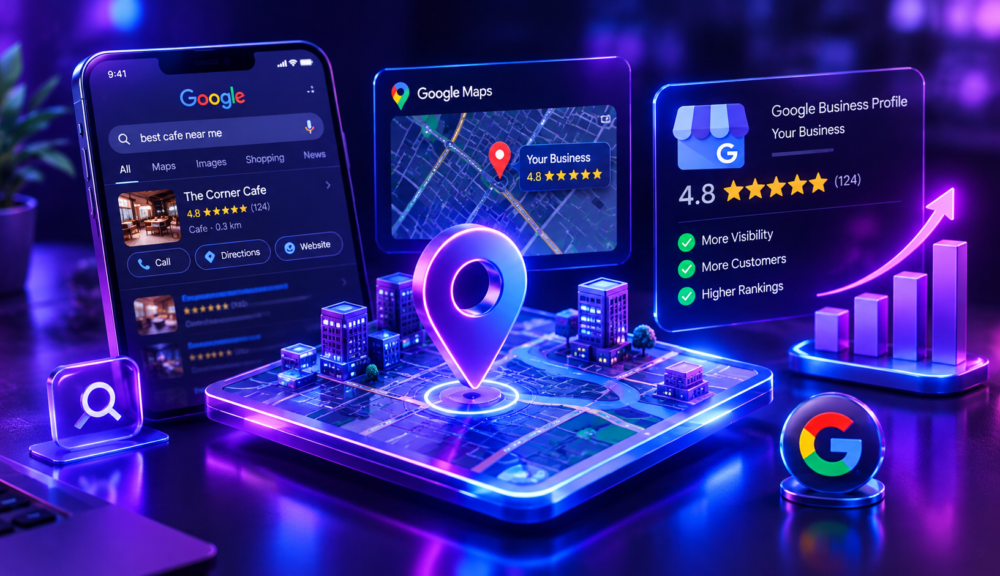
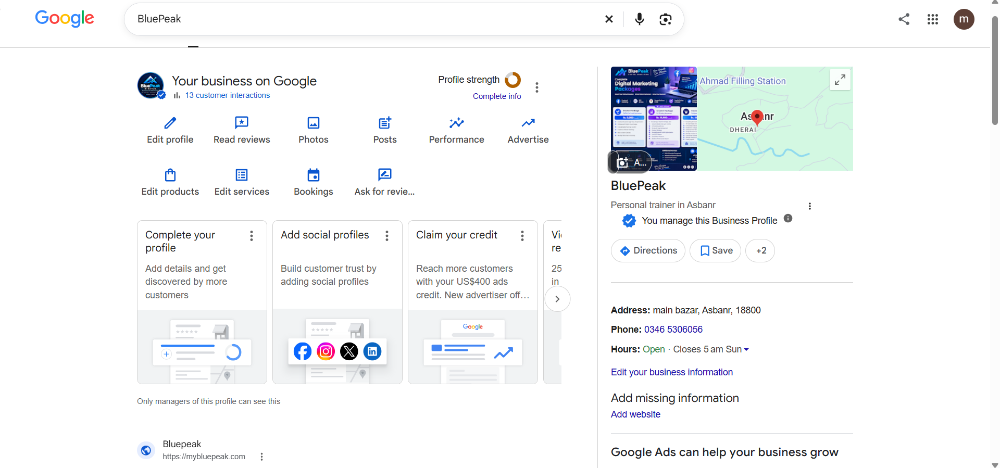
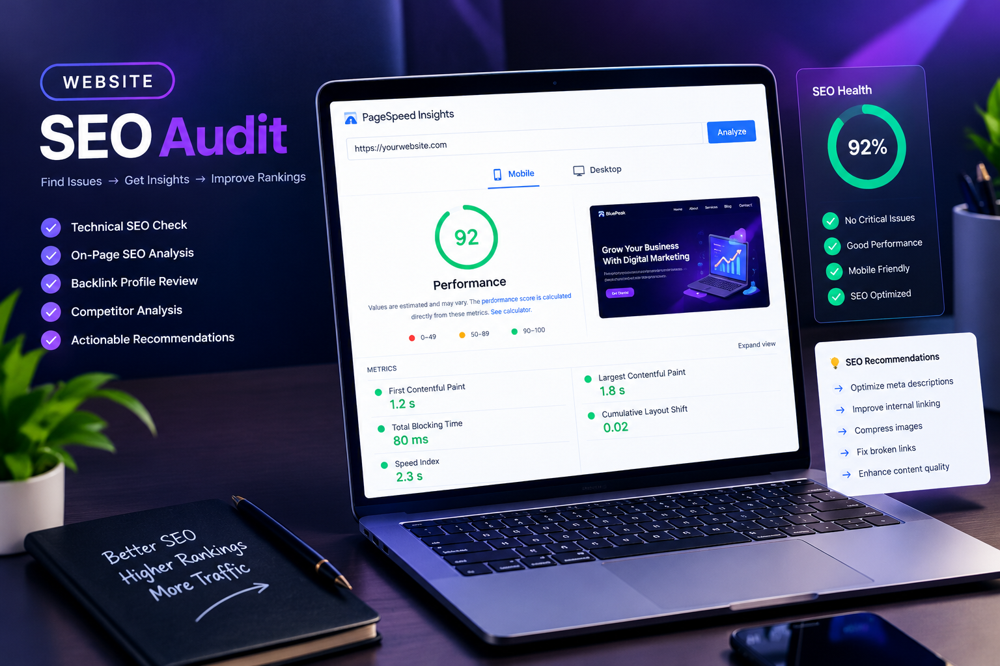

Search Engine Optimization
On-page, off-page, and technical SEO foundations designed to improve organic visibility and attract relevant visitors.
Digital Marketer · SEO Specialist
I’m Mehran Ullah. I help businesses build a stronger digital presence through thoughtful SEO, strategic marketing, and meaningful online experiences.
Good marketing is more than clicks. It’s about helping the right people discover a business, understand its value, and take the next step.
I’m Mehran Ullah, a digital marketer and SEO specialist focused on helping businesses strengthen their online presence. From improving search visibility to building practical social media strategies, I bring curiosity, clear communication, and a growth mindset to every project.
I enjoy turning complex digital challenges into approachable plans that support real business goals.
Have a project in mind? Let’s talk ↗Practical digital solutions to help your business get discovered and grow with confidence.
On-page, off-page, and technical SEO foundations designed to improve organic visibility and attract relevant visitors.

02Optimize local presence, business information, and profile content so nearby customers can find and contact you.
Consistent content planning and platform-focused campaigns that communicate your brand and engage your audience.
Clear marketing priorities, audience-focused messaging, and measurable next steps for your digital channels.
I combine analytical thinking with creative execution to help brands make smarter digital decisions.
A few examples of the kind of digital work I enjoy. Replace these sample cards with your real projects, screenshots, and results.

Local search presence for BluePeak, with its business profile, location, contact details, and photos displayed in Google.
Google Business Profile ↗Content direction and campaign planning to build a consistent brand presence.
Add campaign details ↗
Sample audit workflow covering technical checks, page optimization, and actionable priorities.
Add audit snapshot ↗Have a business to promote, a website to improve, or a project to discuss? Send me a message and let’s explore what’s possible.